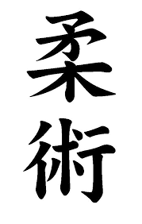

Jiujutsu
Short History
The written history of Jujutsu first began during the Nara period (c. 710 - c. 794) combining early forms of Sumo and various Japanese martial arts which were used on the battlefield for close combat. The oldest known styles of Jujutsu are, Shinden Fudo-ryū (c. 1130), Tenshin Shōden Katori Shintō-ryū (c. 1447), and Takenouchi-ryū, which was founded in 1532. Many jujutsu forms also extensively taught parrying and counterattacking long weapons such as swords or spears via a dagger or other small weapons. In contrast to the neighbouring nations of China and Okinawa whose martial arts made greater use of striking techniques, Japanese hand-to-hand combat forms focused heavily upon throwing (including joint-locking throws), immobilizing, joint locks, choking, strangulation, and to lesser extent ground fighting.
In the early 17th century during the Edo period, jujutsu would continue to evolve due to the strict laws which were imposed by the Tokugawa shogunate to reduce war as influenced by the Chinese social philosophy of Neo-Confucianism which was obtained during Hideyoshi's invasions of Korea and spread throughout Japan via scholars such as Fujiwara Seika.[6] During this new ideology, weapons and armor became unused decorative items, so hand-to-hand combat flourished as a form of self-defense and new techniques were created to adapt to the changing situation of unarmored opponents. This included the development of various striking techniques in jujutsu which expanded upon the limited striking previously found in jujutsu which targeted vital areas above the shoulders such as the eyes, throat, and back of the neck. However towards the 18th century the number of striking techniques was severely reduced as they were considered less effective and exert too much energy; instead striking in jujutsu primarily became used as a way to distract the opponent or to unbalance him in the lead up to a joint lock, strangle or throw.
During the same period the numerous jujutsu schools would challenge each other to duels which became a popular pastime for warriors under a peaceful unified government, from these challenges randori was created to practice without risk of breaking the law and the various styles of each school evolved from combating each other without intention to kill. The term jūjutsu was not coined until the 17th century, after which time it became a blanket term for a wide variety of grappling-related disciplines and techniques. Prior to that time, these skills had names such as "short sword grappling" (小具足腰之廻, kogusoku koshi no mawari), "grappling" (組討 or 組打, kumiuchi), "body art" (体術, taijutsu), "softness" (柔 or 和, yawara), "art of harmony" (和術, wajutsu, yawarajutsu), "catching hand" (捕手, torite), and even the "way of softness" (柔道, jūdō) (as early as 1724, almost two centuries before Kanō Jigorō founded the modern art of Kodokan judo).
Today, the systems of unarmed combat that were developed and practiced during the Muromachi period (1333-1573) are referred to collectively as Japanese old-style jujutsu (日本古流柔術, Nihon koryū jūjutsu). At this period in history, the systems practiced were not systems of unarmed combat, but rather means for an unarmed or lightly armed warrior to fight a heavily armed and armored enemy on the battlefield. In battle, it was often impossible for a samurai to use his long sword or polearm, and would, therefore, be forced to rely on his short sword, dagger, or bare hands. When fully armored, the effective use of such "minor" weapons necessitated the employment of grappling skills. Methods of combat (as mentioned above) included striking (kicking and punching), various takedowns, trips, throwing (body throws, shoulder and hip throws, joint-locking throws, sacrifice throws, unbalance and leg sweeping throws), restraining (pinning, strangling, grappling, wrestling, and rope tying) and weaponry. Defensive tactics included blocking, evading, off-balancing, blending and escaping. Minor weapons such as the tantō (knife), ryofundo kusari (weighted chain), kabuto wari (helmet breaker), and Kaku shi buki (secret or disguised weapons) were almost always included in Sengoku jujutsu.
Description
The word Jujutsu can be broken down into two parts. "Ju" is a concept. The idea behind this meaning of Ju is "to be gentle", "to give way", "to yield", "to blend", "to move out of harm's way". "Jutsu" is the principle or "the action" part of ju-jutsu. In Japanese this word means Japanese jujutsu systems typically put more emphasis on throwing, pinning, and joint-locking techniques as compared with martial arts such as karate, which rely more on striking techniques. Striking techniques were seen as less important in most older Japanese systems because of the protection of samurai body armor and because they were considered less effective than throws and grappling so were mostly used as set-ups for their grappling techniques and throws, although some styles, such as Yōshin-ryū, Tenjin Shin'yō-ryū and Kyushin-ryū had more emphasis on striking. However, many modern-day jujutsu schools include striking, both as a set-up for further techniques or as a stand-alone action. In jujutsu, practitioners train in the use of many potentially fatal or crippling moves, such as joint-locking throws. However, because students mostly train in a non-competitive environment, the risk is minimized. Students are taught break falling skills to allow them to safely practice otherwise dangerous throws.